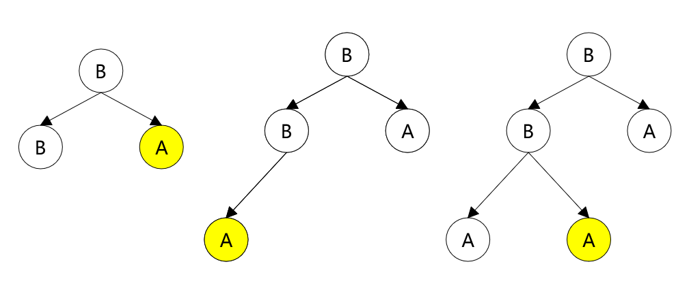

搜索解答
目前已完成到 3.1
2.4.24
上次更新：2019-04-17
发现了题解错误/代码缺陷/排版问题？请点这里：如何：提交反馈 。
解答
链式实现，每个结点都包含一个指向父结点的指针和两个指向子结点的指针。
交换结点可以直接用交换两个结点的值来实现（与数组的实现一样），而不是对两个结点的指针进行交换。
于是 Sink() 和 Swim() 操作就比较简单，直接按照定义实现即可。
比较困难的是删除和插入结点，或者更具体的说，
如何找到按照完全二叉树定义下序号向后/向前一位的结点？
我们首先在堆里面维护两个指针，一个指向根结点（root），另一个指向当前最后一个结点（last）。
当需要插入新结点时，我们需要找到 last 的后一位的父结点，然后把新的结点插入为该结点的左子结点。
这段话可能比较绕，下面这个示意图可以帮助理解，有三种情况：

标黄的代表 last 指着的位置。
我们先从简单的说起，中间的第二种情况，新插入的结点应该放在右侧，即作为 last 的父结点的右子结点。
如果 last 已经是右子结点了，那么就考虑第三种情况。
此时应该向上回溯，直到在某一次回溯中，结点是从父结点的左侧回溯上来的
（即图中路径 A-B-B，B-B 这一步是从左子树回溯上来的）。
于是待插入的位置就在该父结点的右子树的最左侧结点（即图中根结点的右子结点 A）。
最后是图中第一种情况，整棵树已经是满二叉树了。
这种情况下会一路回溯到根结点，那么只要一路下沉到最左侧的叶子结点，把新结点插入到其左子树上即可。
删除结点同理，也是这三种情况，只是需要找前一个结点，判断条件中的左右正好相反。
如果已经是右子结点了，只需要把 last 改为其父结点的左子树即可。
如果是左子结点，就需要回溯，直到某一次回溯是从右子树回溯上来的，last 应该指向其左子树的最右侧结点。
如果删除后正好变成满二叉树，那么会一直回溯到根结点，last 应该指向整棵树的最右侧结点。
代码实现中还需要处理只有一个结点以及没有结点时的特殊情况。
根据上面的算法，插入/删除找到相应位置所需的最大耗时为 2lgN
（从树的一侧回溯到根结点，再下沉到另一侧的底部）。
Sink 和 Swim 是 O(lgN) 级的，因此整个插入/删除操作是 O(lgN) 的。
代码
using System;
namespace PriorityQueue
{
/// <summary>
/// 基于链式结构实现的最大堆。
/// </summary>
/// <typeparam name="Key">优先队列中保存的数据类型。</typeparam>
public class MaxPQLinked<Key> : IMaxPQ<Key> where Key : IComparable<Key>
{
/// <summary>
/// 二叉堆的根结点。
/// </summary>
private TreeNode<Key> root = null;
/// <summary>
/// 二叉堆的最后一个结点。
/// </summary>
private TreeNode<Key> last = null;
/// <summary>
/// 二叉堆中的结点个数。
/// </summary>
private int nodesCount = 0;
/// <summary>
/// 建立一个链式结构的最大堆。
/// </summary>
public MaxPQLinked() { }
/// <summary>
/// 删除并返回最大值。
/// </summary>
/// <returns>最大值。</returns>
public Key DelMax()
{
Key result = this.root.Value;
Exch(this.root, this.last);
if (this.nodesCount == 2)
{
this.root.Left = null;
this.last = this.root;
this.nodesCount--;
return result;
}
else if (this.nodesCount == 1)
{
this.last = null;
this.root = null;
this.nodesCount--;
return result;
}
// 获得前一个结点。
TreeNode<Key> newLast = this.last;
if (newLast == this.last.Prev.Right)
newLast = this.last.Prev.Left;
else
{
// 找到上一棵子树。
while (newLast != this.root)
{
if (newLast != newLast.Prev.Left)
break;
newLast = newLast.Prev;
}
// 已经是满二叉树。
if (newLast == this.root)
{
// 一路向右，回到上一层。
while (newLast.Right != null)
newLast = newLast.Right;
}
// 不是满二叉树。
else
{
// 向左子树移动，再一路向右。
newLast = newLast.Prev.Left;
while (newLast.Right != null)
newLast = newLast.Right;
}
}
// 删除最后一个结点。
if (this.last.Prev.Left == this.last)
this.last.Prev.Left = null;
else
this.last.Prev.Right = null;
Sink(this.root);
// 指向新的最后一个结点。
this.last = newLast;
this.nodesCount--;
return result;
}
/// <summary>
/// 插入一个新的结点。
/// </summary>
/// <param name="v">待插入的结点。</param>
public void Insert(Key v)
{
TreeNode<Key> item = new TreeNode<Key>(v);
// 堆为空。
if (this.last == null)
{
this.root = item;
this.last = item;
this.nodesCount++;
return;
}
// 堆只有一个结点。
if (this.last == this.root)
{
item.Prev = this.root;
this.root.Left = item;
this.last = item;
this.nodesCount++;
Swim(item);
return;
}
// 定位到最后一个节点的父结点。
TreeNode<Key> prev = this.last.Prev;
// 右子节点为空，插入到右子节点。
if (prev.Right == null)
{
item.Prev = prev;
prev.Right = item;
}
else
{
// 当前子树已满，需要向上回溯。
// 找到下一个子树（回溯的时候是从左子树回溯上去的）。
while (prev != this.root)
{
if (prev != prev.Prev.Right)
break;
prev = prev.Prev;
}
// 已经是满二叉树。
if (prev == this.root)
{
// 一路向左，进入下一层。
while (prev.Left != null)
prev = prev.Left;
item.Prev = prev;
prev.Left = item;
}
// 不是满二叉树。
else
{
// 向右子树移动，再一路向左。
prev = prev.Prev.Right;
while (prev.Left != null)
prev = prev.Left;
item.Prev = prev;
prev.Left = item;
}
}
this.last = item;
this.nodesCount++;
Swim(item);
return;
}
/// <summary>
/// 返回二叉堆是否为空。
/// </summary>
/// <returns></returns>
public bool IsEmpty() => this.root == null;
/// <summary>
/// 返回二叉堆中的最大值。
/// </summary>
/// <returns></returns>
public Key Max() => this.root.Value;
/// <summary>
/// 返回二叉堆中的元素个数。
/// </summary>
/// <returns></returns>
public int Size() => this.nodesCount;
/// <summary>
/// 使结点上浮。
/// </summary>
/// <param name="k">需要上浮的结点。</param>
private void Swim(TreeNode<Key> k)
{
while (k.Prev != null)
{
if (Less(k.Prev, k))
{
Exch(k.Prev, k);
k = k.Prev;
}
else
break;
}
}
/// <summary>
/// 使结点下沉。
/// </summary>
/// <param name="k">需要下沉的结点。</param>
private void Sink(TreeNode<Key> k)
{
while (k.Left != null || k.Right != null)
{
TreeNode<Key> toExch = null;
if (k.Left != null && k.Right != null)
toExch = Less(k.Left, k.Right) ? k.Right : k.Left;
else if (k.Left != null)
toExch = k.Left;
else
toExch = k.Right;
if (Less(k, toExch))
Exch(k, toExch);
else
break;
k = toExch;
}
}
/// <summary>
/// 交换二叉堆中的两个结点。
/// </summary>
/// <param name="a">要交换的第一个结点。</param>
/// <param name="b">要交换的第二个结点。</param>
private void Exch(TreeNode<Key> a, TreeNode<Key> b)
{
Key temp = a.Value;
a.Value = b.Value;
b.Value = temp;
}
/// <summary>
/// 比较第一个结点值的是否小于第二个。
/// </summary>
/// <param name="a">判断是否较小的结点。</param>
/// <param name="b">判断是否较大的结点。</param>
/// <returns></returns>
private bool Less(TreeNode<Key> a, TreeNode<Key> b)
=> a.Value.CompareTo(b.Value) < 0;
}
}